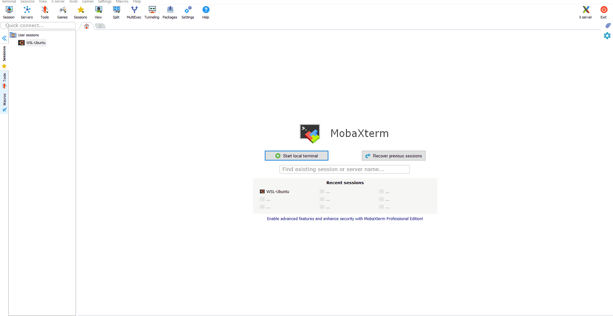
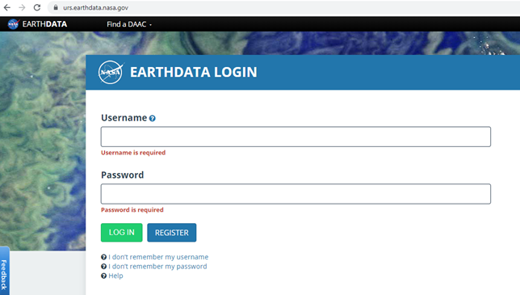

Spatio-temporal analysis with GRASS GIS
IHE Delft Institute for Water Education
The Netherlands
Outline
- Installation steps
- Introduction to GRASS GIS
- Start with GRASS GIS - first steps
- Explore features of GRASS GIS
- Exercise 1 - Seasonal aggregation and statistical analysis
- Exercise 2 - Spatio-temporal analysis of climatic data (optional)
- Exercise 3 - Processing climatic data from GLDAS
Exercise 3 - Processing climatic data from GLDAS
Objectives
Aim:The main objective of this exercise is to explain step by step procedure to process climatic inputs for SEBAL model (PySEBAL). Here we will use the three hour data from GLDAS.
GLDAS data:
GLDAS data are available to download from this link.
Detailed documentation about GLDAS 2.1 product is available here.
Specific requirements
For running models like PySEBAL meteo data with following properties are required: The units at which GLDAS provide air temperature (K) and Pressure(Pa) are different. Further GLDAS provide specific humidity and PySEBAL require relative humidity as input. To match the requirements for PySEBAL following conversion steps have to be performed:
{kind=link}
- Convert GLDAS air temperature from Kelvin to Deg C
- Convert the unit of GLDAS pressure from Pa to Milli bar (Mb)
- Convert specific humidity to relative humidity following the description here
- Compute daily averages of SWdown, Ws, Tair, P and Rh
- Compute instantaneous SWdown, Ws, Tair, P and Rh maps representing the time of acquisition of satellite image. As the GLDAS data is three hourly, for the Landsat satellite which has an acquisition time of ~07:30 GMT over Urmia Lake Basin, an average of GLDAS data at 06:00 and 09:00 GMT are computed.
Step 1: Install gldas python package
As the temporal resolution of GLDAS data is three hours, downloading GLDAS data manually is not a practical approach. Instead we will use a python package called gldas to download data from a START date to END date.To install the package open MobaXterm and an Ubuntu session.

MobaXterm with Ubuntu Linux open (Highlighted where you should double click to open Ubuntu)
MobaXterm with Ubuntu Linux open (Highlighted where you should double click to open Ubuntu)
## In the Ubuntu session in MobaXterm,
## Type in the following command to install the python package "gldas"
## Remember you must be connected to internet
pip3 install gldas
## press enter
Step 2: Bulk Download GLDAS data
To download GLDAS data you need to have a login to NASA Earth data repository. So register and create a user login in the NASA earthdata website.

NASA Earthdata login page
NASA Earthdata login page
Now let us download GLDAS data in one step for three days from 23 May 2019 to 25 May 2019 using the gldas package installed in the previous step. To download the data we will use the command
.
## To see the help of gldas_download command
gldas_download --h
## Below code will download the GLDAS data between the dates provided in the command.
gldas_download -s 2019-05-23 -e 2019-05-25 --product GLDAS_Noah_v21_025 --username @@@@ --password @@@@ /mnt/path/to/folder
## Note that the last argument in above command is path to a folder where the downloaded files will be stored.
## Note: you have to replace @@@@ with your username and password created in earthdata login.
{kind=link}
Step 3: Processing single gldas data file
Let us now see how to process a single NetCDF file (.nc4) dowloaded from GLDAS using the previous step and perform the required conversions for PySEBAL as explained in the beginning of this exercise.For example let us consider the GLDAS data representing 06:00 hours on 24 May 2019 which also happens to be a date when there is a Landsat acquisition over our study area - MIS. After the download, you will find this data inside
The file name is GLDAS_NOAH025_3H.A20190524.0600.021.nc4
Structure of File Name
The GLDAS file name follows a particular structure.
Now let us see how to read the metadata of this file in command line using gdal tools.
## change directory to where you have downloaded the GLDAS data using the below
cd /mnt/path/to/youroutputfolder/2019/144
## Display metadata of the 'GLDAS_NOAH025_3H.A20190524.0600.021.nc4'
gdalinfo GLDAS_NOAH025_3H.A20190524.0600.021.nc4
## press enter
{kind=link}
{kind=link}
For example,
So for PySEBAL we need the following subdatasets from a single GLDAS file:
Now let us extract each of the above subdatasets and convert them into tif file. For this we will use a gdal command called
## Convert specific humidity to tif - below command
gdal_translate NETCDF:"GLDAS_NOAH025_3H.A20190524.0600.021.nc4":Qair_f_inst GLDAS_NOAH025_3H_20190524_0600_Qair.tif
## Convert Surface Pressure to tif - below command
gdal_translate NETCDF:"GLDAS_NOAH025_3H.A20190524.0600.021.nc4":Psurf_f_inst GLDAS_NOAH025_3H_20190524_0600_Psurf.tif
## Convert air temperature to tif - below command
gdal_translate NETCDF:"GLDAS_NOAH025_3H.A20190524.0600.021.nc4":Tair_f_inst GLDAS_NOAH025_3H_20190524_0600_Tair.tif
## Convert Wind speed to tif - below command
gdal_translate NETCDF:"GLDAS_NOAH025_3H.A20190524.0600.021.nc4":Wind_f_inst GLDAS_NOAH025_3H_20190524_0600_Wind.tif
## Convert Short wave downward radiation to tif - below command
gdal_translate NETCDF:"GLDAS_NOAH025_3H.A20190524.0600.021.nc4":SWdown_f_tavg GLDAS_NOAH025_3H_20190524_0600_SWdown.tif
## Press enter
{kind=link}
{kind=link}
Unit conversion of GLDAS parameters for PySEBAL
Now let us see how to do unit conversion of all the five parameters required for PySEBAL. One additional step is to clip the unit converted maps to ULB as we are only interested in that region not global.For further steps let us move to GRASS GIS as it is easier to do spatial and temporal analysis with GRASS library. We will create a new location and mapset for processing GLDAS data for ULB.
Create New GRASS GIS Location and mapset for gldas data processing
# Create (-c) just the location called "latlong" in epsg:4326 and exit (-e)
# Remember name of the location can be anything, give a logical name
# Use the same grass data folder which you have used before.
grass78 epsg:4326 /mnt/d/grassdata/latlong -c -e
# Create (-c) mapset called "ulb_gldas" inside the location "latlong" and open GRASS GIS in "latlong/ulb_gldas" mapset
grass78 /mnt/d/grassdata/latlong/ulb_gldas -c
# "-c" flag in above command is required only one time to create the mapset ulb_wapor
# Afterwards use below command to just start the existing mapset.
# grass78 /mnt/d/grassdata/latlong/ulb_gldas
Import the ulb vector file and the gldas tif files:
## IMPORT VECTOR DATA: Boundaries of Urmia Lake basin, Miandoab Irrig scheme and Urmia Lake
## Navigate (cd) to the 'Base_layers' folder provided to you
cd /path/to/Base_layers # change the path to actual path in your computer
# Import 'Urmia Lake Basin' boundary shapefile into a vector in Grass GIS
v.import in=UrmiaLB.shp out=ulb
# Import 'Miandoab Irrigation Scheme' boundary shapefile into a vector in Grass GIS
v.import in=Miandoab.shp out=mis
# Import 'Urmia Lake' boundary shapefile into a vector in Grass GIS
v.import in=LakeUrmia.shp out=lake
# set the computational region to Urmia Lake basin and set the computational resolution to 0.25 degrees
g.region vector=ulb res=0.25 -a
# Now let us import all the tif files we created for the date - 24 May 2019:
# Note that below command with r.import automatically clip the global data into ULB region
# Import and clip Tair
r.import input=GLDAS_NOAH025_3H_20190524_0600_Tair.tif output=GLDAS_NOAH025_3H_20190524_0600_Tair extent=region resolution=region -o --o
# Import and clip specific humidity
r.import input=GLDAS_NOAH025_3H_20190524_0600_Qair.tif output=GLDAS_NOAH025_3H_20190524_0600_Qair extent=region resolution=region -o --o
# Import and clip Wind speed
r.import input=GLDAS_NOAH025_3H_20190524_0600_Wind.tif output=GLDAS_NOAH025_3H_20190524_0600_Wind extent=region resolution=region -o --o
# Import and clip Short wave radiation
r.import input=GLDAS_NOAH025_3H_20190524_0600_SWdown.tif output=GLDAS_NOAH025_3H_20190524_0600_SWdown extent=region resolution=region -o --o
# Import and clip Surface Pressure
r.import input=GLDAS_NOAH025_3H_20190524_0600_Psurf.tif output=GLDAS_NOAH025_3H_20190524_0600_Psurf extent=region resolution=region -o --o
Now that we have all the data in GRASS mapset, let us do the unit conversions in command line using raster map calculator.
## Air temperature from Kelvin to degree celsius
r.mapcalc "GLDAS_NOAH025_3H_20190524_0600_Tair_final = GLDAS_NOAH025_3H_20190524_0600_Tair - 273.15" --o
## Pressure convert from pa to mb
r.mapcalc "GLDAS_NOAH025_3H_20190524_0600_Psurf_final = GLDAS_NOAH025_3H_20190524_0600_Psurf / 100" --o
r.mapcalc "GLDAS_NOAH025_3H_20190524_0600_SWdown_final = GLDAS_NOAH025_3H_${dt}_SWdown"
# Wind speed (no conversion required)
r.mapcalc "GLDAS_NOAH025_3H_20190524_0600_Wind_final = GLDAS_NOAH025_3H_${dt}_Wind"
## Convert specific humidity to relative humidity
## Humidity according to the url: https://earthscience.stackexchange.com/questions/2360/how-do-i-convert-specific-humidity-to-relative-humidity
# Calculate Saturation vapour pressure
r.mapcalc "es = 6.112 * exp((17.67 * GLDAS_NOAH025_3H_20190524_0600_Tair_deg) / (GLDAS_NOAH025_3H_20190524_0600_Tair_deg + 243.5))" --o
# Calculate vapour pressure
r.mapcalc "e = (GLDAS_NOAH025_3H_20190524_0600_Qair * GLDAS_NOAH025_3H_20190524_0600_Psurf_mb) / (0.378 * GLDAS_NOAH025_3H_20190524_0600_Qair + 0.622)" --o
# Calculate Relative humidity
r.mapcalc "GLDAS_NOAH025_3H_20190524_0600_Rh = (e / es) * 100" --o
# Remove outliers from relative humidity, > 100 = 100 and < 0 is 0
r.mapcalc "GLDAS_NOAH025_3H_20190524_0600_Rh_final = float(if(GLDAS_NOAH025_3H_20190524_0600_Rh > 100, 100, if(GLDAS_NOAH025_3H_20190524_0600_Rh < 0, 0, GLDAS_NOAH025_3H_20190524_0600_Rh)))" --o
#!/bin/bash
## This script process a single day GLDAS data and do all the required conversions needed for PySEBAL
## GENERAL ##
if [ -z "$GISBASE" ] ; then
echo "You must be in GRASS GIS to run this program." >&2
exit 1
fi
# Set a environment to enable overwrite by default
export GRASS_OVERWRITE=1
# Navigate to the folder containing single day .nc4 files
cd /mnt/path/to/youroutputfolder/2019/144
# set the computational region to Urmia Lake basin and set the computational resolution to 0.25 degrees
g.region vector=ulb res=0.25 -a
# For loop to process all the .nc files in one go
for i in `ls GLDAS*.nc4`; do
dt=`echo ${i}|cut -d. -f2-3`
# Convert specific humidity to tif - below command
gdal_translate NETCDF:"${i}":Qair_f_inst ${TMP}/GLDAS_NOAH025_3H_${dt}_Qair.tif
# Convert Surface Pressure to tif - below command
gdal_translate NETCDF:"${i}":Psurf_f_inst ${TMP}/GLDAS_NOAH025_3H_${dt}_Psurf.tif
# Convert air temperature to tif - below command
gdal_translate NETCDF:"${i}":Tair_f_inst ${TMP}/GLDAS_NOAH025_3H_${dt}_Tair.tif
# Convert Wind speed to tif - below command
gdal_translate NETCDF:"${i}":Wind_f_inst ${TMP}/GLDAS_NOAH025_3H_${dt}_Wind.tif
# Convert Short wave downward radiation to tif - below command
gdal_translate NETCDF:"${i}":SWdown_f_tavg ${TMP}/GLDAS_NOAH025_3H_${dt}_SWdown.tif
# Import to GRASS
# Import and clip specific humidity
r.import in=GLDAS_NOAH025_3H_${dt}_Qair.tif out=GLDAS_NOAH025_3H_${dt}_Qair -o
# Import and clip Surface Pressure
r.import in=GLDAS_NOAH025_3H_${dt}_Psurf.tif out=GLDAS_NOAH025_3H_${dt}_Psurf -o
# Import and clip Tair
r.import in=GLDAS_NOAH025_3H_${dt}_Tair.tif out=GLDAS_NOAH025_3H_${dt}_Tair -o
# Import and clip Wind speed
r.import in=GLDAS_NOAH025_3H_${dt}_Wind.tif out=GLDAS_NOAH025_3H_${dt}_Wind -o
# Import and clip Short wave radiation
r.import in=GLDAS_NOAH025_3H_${dt}_SWdown.tif out=GLDAS_NOAH025_3H_${dt}_SWdown -o
# Unit conversion
# Air temperature from Kelvin to degree celsius
r.mapcalc "GLDAS_NOAH025_3H_${dt}_Tair_final = GLDAS_NOAH025_3H_${dt}_Tair - 273.15"
# Short wave radiation (no conversion required)
r.mapcalc "GLDAS_NOAH025_3H_${dt}_SWdown_final = GLDAS_NOAH025_3H_${dt}_SWdown"
# Wind speed (no conversion required)
r.mapcalc "GLDAS_NOAH025_3H_${dt}_Wind_final = GLDAS_NOAH025_3H_${dt}_Wind"
## Pressure convert from pa to mb
r.mapcalc "GLDAS_NOAH025_3H_${dt}_Psurf_final = GLDAS_NOAH025_3H_${dt}_Psurf / 100"
## Humidity according to the url: https://earthscience.stackexchange.com/questions/2360/how-do-i-convert-specific-humidity-to-relative-humidity
r.mapcalc "es = 6.112 * exp((17.67 * GLDAS_NOAH025_3H_${dt}_Tair_final) / (GLDAS_NOAH025_3H_${dt}_Tair_final + 243.5))" --o
r.mapcalc "e = (GLDAS_NOAH025_3H_${dt}_Qair_final * GLDAS_NOAH025_3H_${dt}_Psurf_final) / (0.378 * GLDAS_NOAH025_3H_${dt}_Qair_final + 0.622)"
r.mapcalc "GLDAS_NOAH025_3H_${dt}_Rh = (e / es) * 100"
# Final Relative humidity in %
r.mapcalc "GLDAS_NOAH025_3H_${dt}_Rh_final = float(if(GLDAS_NOAH025_3H_${dt}_Rh > 100, 100, if(GLDAS_NOAH025_3H_${dt}_Rh < 0, 0, GLDAS_NOAH025_3H_${dt}_Rh)))"
done
In short the last code snippet with for loop is all you want to process all the .nc files in a day. Also remember that you have to run this script inside a GRASS GIS session. You can copy the entire code in the above snippet to command line and enter to run, or create a script file.
How to create a script file !
Copy all the code in the above snippet and paste into notepad. Save it as "myscript.sh".
Follow the below command to run the script.
# run the following command to run the above saved script file
sh myscript.sh
# press enter
Step 4: Aggregating to daily average and instantaneous maps
As explained earlier, PySEBAL require all parameters in two levels per day - instantaneous corresponding to the acquisition time of Landsat and Daily averageIn this step we will use the r.series module in GRASS GIS.
Instantaneous
Landsat acquisition time is around 7:30 in the morning. So let us consider the average of 0600 and 0900 time GLDAS parameters as instantaneous.
# Set the date in the same format as GLDAS used in the name.
dt="20190524"
# set the first time
t1="0600"
# set the second time
t2="0900"
### COMPUTING THE INSTANTANEOUS USING AVERAGE OF 9:00 and 12:00
r.series input="GLDAS_NOAH025_3H_A${dt}.${t1}_Tair_final,GLDAS_NOAH025_3H_A${dt}.${t2}_Tair_final" output=GLDAS_NOAH025_3H_A${dt}_Tair_inst method=average
r.series input="GLDAS_NOAH025_3H_A${dt}.${t1}_SWdown_final,GLDAS_NOAH025_3H_A${dt}.${t2}_SWdown_final" output=GLDAS_NOAH025_3H_A{dt}_SWdown_inst method=average
r.series input="GLDAS_NOAH025_3H_A2${dt}.${t1}_Wind_final,GLDAS_NOAH025_3H_A${dt}.${t2}_Wind_final" output=GLDAS_NOAH025_3H_A{dt}_Wind_inst method=average
r.series input="GLDAS_NOAH025_3H_A${dt}.${t1}_Rh_final,GLDAS_NOAH025_3H_A${dt}.${t2}_Rh_final" output=GLDAS_NOAH025_3H_A{dt}_Rh_inst method=average
dt="20190524"
## Save the names of all 8 maps representing the date as defined in dt variable ##
MAPS1=`g.list rast pattern=GLDAS_NOAH025_3H_A${dt}.*_Tair_final$ sep=, map=.|cat`
MAPS2=`g.list rast pattern=GLDAS_NOAH025_3H_A${dt}.*_SWdown_final$ sep=, map=.|cat`
MAPS3=`g.list rast pattern=GLDAS_NOAH025_3H_A${dt}.*_Wind_final$ sep=, map=.|cat`
MAPS4=`g.list rast pattern=GLDAS_NOAH025_3H_A${dt}.*_Rh_final$ sep=, map=.|cat`
## USe the above maps as input to create daily averages
r.series input=${MAPS1} output=GLDAS_NOAH025_3H_A${dt}_Tair_24 method=average
r.series input=${MAPS2} output=GLDAS_NOAH025_3H_A${dt}_SWdown_24 method=average
r.series input=${MAPS3} output=GLDAS_NOAH025_3H_A${dt}_Wind_24 method=average
r.series input=${MAPS4} output=GLDAS_NOAH025_3H_A${dt}_Rh_24 method=average
Step 5: Additional step - spline interpolation to improve spatial resolution (~ 1km)
This step is an additional step which is not mandatory for PySEBAL. Though it improves the spatial continuity in the map, thus resucing the pixelated effects in PySEBAL outputs.For the spatial interpolation we will use the r.resamp.bspline module in GRASS GIS to perform bicubic spline interpolation.
# set the computational region to a higher resolution (~ 1km))
cd /mnt/path/to/youroutputfolder/2019/144
g.region vect=ulb res=0.0625 -a
# run the bspline interpolation on all the instantaneous maps
# and save the interpolated map into .tif format
for i in `g.list rast pattern=*inst$ map=.`; do
r.resamp.bspline in=${i} out=${i}_interp method=bicubic
r.out.gdal in=${i}_interp out=${i}_interp.tif
done
# run the bspline interpolation on all the daily average maps
# and save the interpolated map into .tif format
for i in `g.list rast pattern=*24$ map=.`; do
r.resamp.bspline in=${i} out=${i}_interp method=bicubic
r.out.gdal in=${i}_interp out=${i}_interp.tif
done
Your tasks
1) Follow the above steps to process GLDAS data for the Landsat dates from the assigned months to you (mandatory for PySEBAL).2) Follow the above steps to process GLDAS data for the other two dates downloaded - 23 May 2019 and 25 May 2019 (Optional)
Last changed: 2021-07-14
GRASS GIS manual main index | Topics index | Keywords Index | Full index | Raster index | Vector index | Temporal index |

Licensed under a Creative Commons Attribution-ShareAlike 4.0 International License - Thanks to Vaclav Petras for the style.